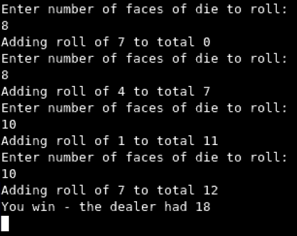
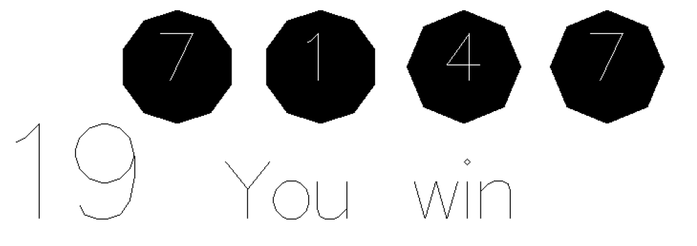

Hackjack
Dice Blackjack
Code
- Written in Haskell, using the functional programming paradigm
- Uses Gloss vector graphics library
- Plays a modified version of Blackjack using dice - players roll dice and try to get closer to a total of 21 than the computer 'dealer' can
- Players can choose how many sides each die has and the program displays an appropriately shaped representation (based on the shape of normal RPG dice)
Screenshots

